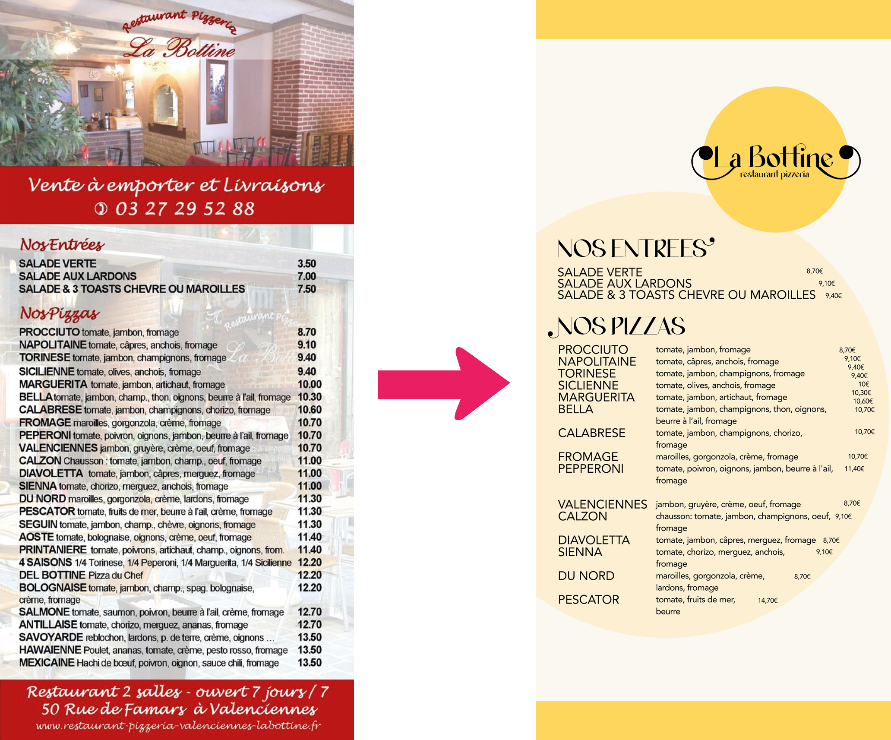
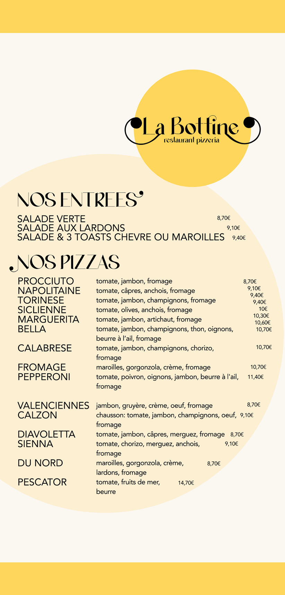

Context
For this first-year assignment, the brief was to redesign the logo and flyer for a pizzeria called La Bottine, aiming to capture both traditional Italian flair and the culinary world of pizza.
Process
Execution & Project Management
For the logo, I wanted to keep things simple: a round shape, reminiscent of a pizza.
Logo:

The serif typeface draws inspiration from classic Italian typography. The wavy dot on the "i" allowed me to incorporate a subtle stylized mustache motif—a visual cue deeply rooted in Italian graphic culture.
Flyer:

As you can see, the previous flyer looked quite outdated. I streamlined several blocks of copy to significantly improve legibility.

I felt the original background image felt cluttered and overwhelmed the reader with visual noise, so I opted to replace it with a clean, solid color background instead.